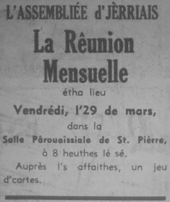
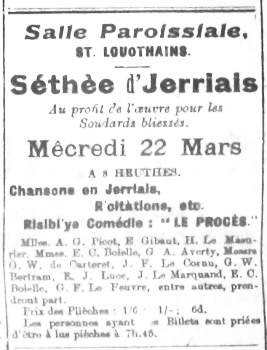

Mar
| Mar |  |
- Si l'mais d'Mar duth'thait chent ans l'hivé duth'thait aussi longtemps.
- Quand Pâques marchinne, peste, dgèrre et fanminne.
- Quand Mar s'en veint comme eune bête i' s'en r'va pendant la tête.
- Quand Mar veint comme un angné i' s'en r'va comme un touothé.
- Poudre d'Mar et plyie d'Avri font grange et grainyi remplyi.

Chroniques de Jersey 1935

1955

1960

1961

1968


1916

1916
Viyiz étout: